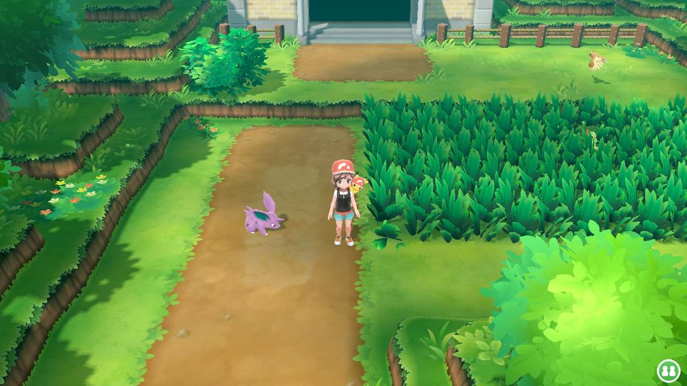
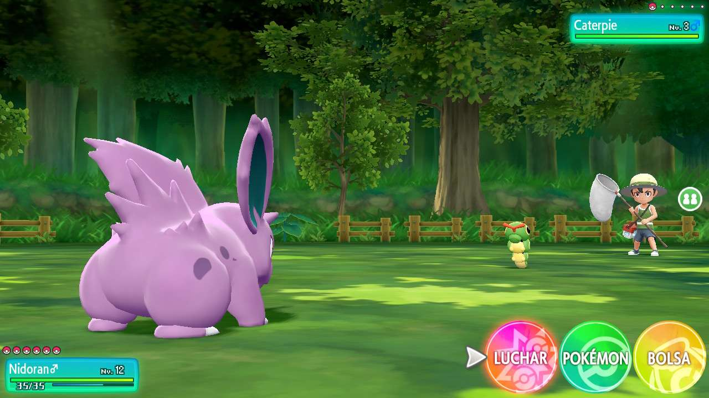
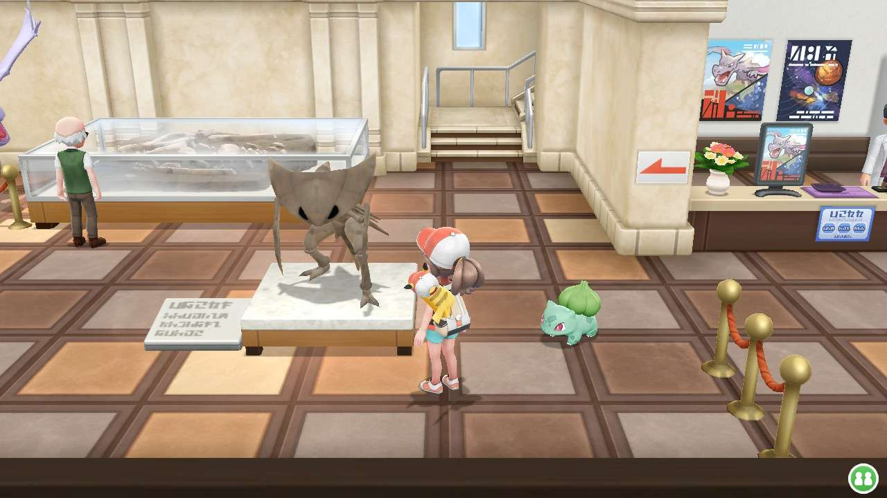
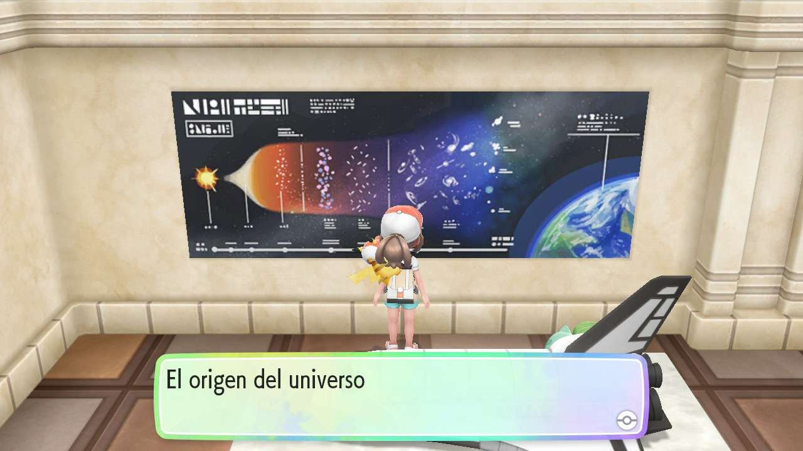
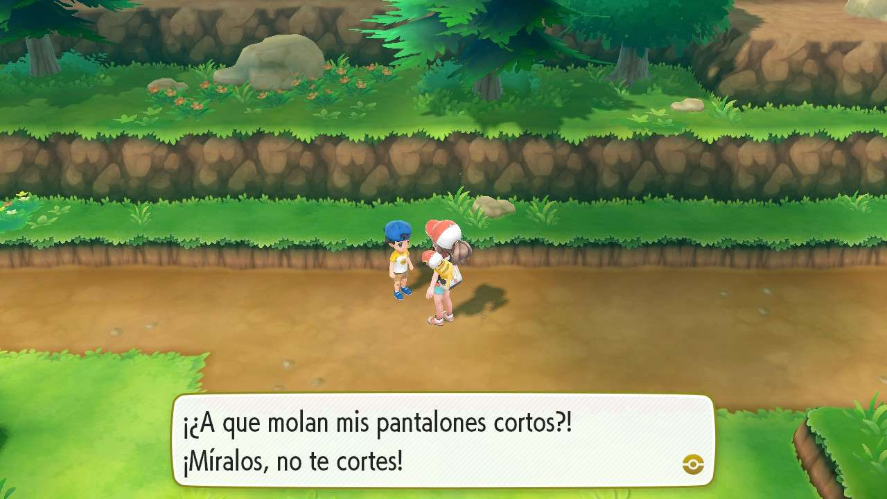

Pokémon Let's Go! Pikachu
Remake de Pokémon amarillo de la 7ª generación
7 / 10
Remake de Pokémon amarillo de la 7ª generación
Game Freak
RPG por turnos
2018
Nintendo Switch
Y el primero es Pokémon Let's Go Pikachu!
Es un juego muy bonito y simple, aunque no sea para nada difícil es divertido.
El Gameplay es muy sencillo ya que no hay habilidades ni objetos, sólo están los cuatro ataques de siempre y lo mejor que tiene es lo de poder montar los pokémon y la vuelta de las Megas.
La historia es súper simple, es lo de siempre los 8 gimnasios y derrotar al equipo malvado de turno, que el Team Rocket está bien pero no da para mucho.




